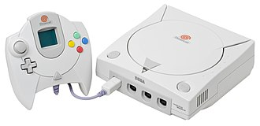
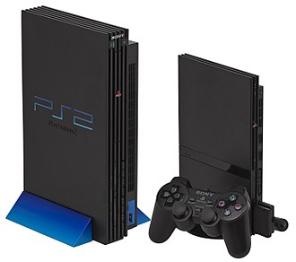
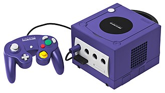
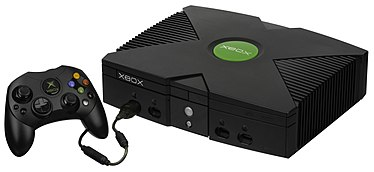
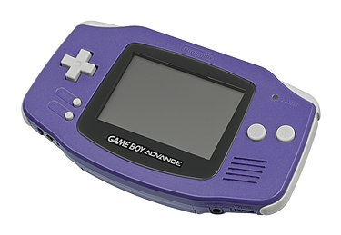
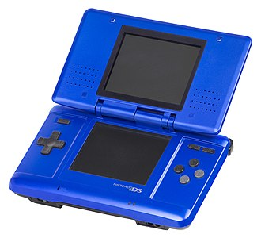
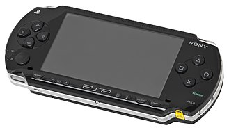

The Sega Dreamcast
The Dreamcast is a home video game console released by Sega on November 27, 1998, in Japan, September 9, 1999, in North America, and October 14, 1999, in Europe. It was the first in the sixth generation of video game consoles, preceding Sony's PlayStation 2, Nintendo's GameCube, and Microsoft's Xbox. The Dreamcast was Sega's final home console, marking the end of the company's eighteen years in the console market.
In contrast to the expensive hardware of the unsuccessful Sega Saturn, the Dreamcast was designed to reduce costs with "off-the-shelf" components, including a Hitachi SH-4 CPU and an NEC PowerVR2 GPU. Released in Japan to a subdued reception, the Dreamcast enjoyed a successful U.S. launch backed by a large marketing campaign, but interest in the system steadily declined as Sony built hype for the upcoming PlayStation 2. Sales did not meet Sega's expectations despite several price cuts, and the company continued to incur significant financial losses. After a change in leadership, Sega discontinued the Dreamcast on March 31, 2001, withdrawing from the console business and restructuring itself as a third-party publisher. In total, 9.13 million Dreamcast units were sold worldwide.
Although the Dreamcast had a short lifespan and limited third-party support, reviewers have considered the console ahead of its time. Its library contains many games considered innovative, including Crazy Taxi, Jet Set Radio, Phantasy Star Online, and Shenmue, as well as high-quality ports from Sega's NAOMI arcade system board. The Dreamcast was also the first console to include a built-in modular modem for internet support and online play.
PlayStation 2
The PlayStation 2 (PS2) is a home video game console developed and marketed by Sony Computer Entertainment. It was first released in Japan on March 4, 2000, in North America on October 26, 2000, in Europe on November 24, 2000, and in Australia on November 30, 2000. It is the successor to the original PlayStation, as well as the second installment in the PlayStation console line-up. A sixth-generation console, it competed with Sega's Dreamcast, Nintendo's GameCube, and Microsoft's original Xbox.
Announced in 1999, the PS2 offered backward-compatibility for its predecessor's DualShock controller, as well as its games. The PS2 is the best-selling video game console of all time, having sold over 155 million units worldwide.[14] Over 3,800 game titles have been released for the PS2, with over 1.5 billion copies sold. Sony later manufactured several smaller, lighter revisions of the console known as Slimline models in 2004.
Even with the release of its successor, the PlayStation 3, the PS2 remained popular well into the seventh generation. It continued to be produced until 2013 when Sony finally announced that it had been discontinued after over twelve years of production—one of the longest lifespans of a video game console. Despite the announcement, new games for the console continued to be produced until the end of 2013, including Final Fantasy XI: Seekers of Adoulin for Japan, FIFA 14 for North America,[16] and Pro Evolution Soccer 2014 for Europe. Repair services for the system in Japan ended on September 7, 2018.
GameCube
The Nintendo GameCube is a home video game console released by Nintendo in Japan and North America in 2001 and in PAL territories in 2002. The GameCube is Nintendo's entry in the sixth generation of video game consoles and the successor to their previous console, the Nintendo 64. The GameCube competed with Sony's PlayStation 2 and Microsoft's Xbox.
The GameCube is the first Nintendo console to use optical discs as its primary storage medium. The discs are in a miniDVD-based format, but the system was not designed to play full-sized DVDs or audio CDs unlike its competitors, and mainly focused on gaming instead. The console supports limited online gaming for a small number of games via a GameCube broadband or modem adapter and can connect to a Game Boy Advance with a link cable, which allows players to access exclusive in-game features using the handheld as a second screen and controller like a Wii U. This allowed players to access features like the Tingle Tuner in The Legend of Zelda: The Wind Waker, among others.
Reception of the GameCube was generally positive. The console was praised for its controller, extensive software library and high-quality games, but was criticized for its exterior design and lack of features. Nintendo sold 21.74 million GameCube units worldwide before the console was discontinued in 2007. Its successor, the Wii, was released in November 2006.
XBox
The Xbox is a home video game console and the first installment in the Xbox series of video game consoles manufactured by Microsoft. It was released as Microsoft's first foray into the gaming console market on November 15, 2001, in North America, followed by Australia, Europe and Japan in 2002. It is classified as a sixth-generation console, competing with Sony's PlayStation 2 and Nintendo's GameCube. It was also the first major console produced by an American company since the release of the Atari Jaguar in 1993.
The console was announced in March 2000. With the release of the PlayStation 2, which featured the ability to playback CD-ROMs and DVDs in addition to playing games, Microsoft became concerned that game consoles would threaten the personal computer as an entertainment device for living rooms. Whereas most games consoles to that point were built from custom hardware components, the Xbox was built around standard personal computer components, using variations of Microsoft Windows and DirectX as its operating system to support games and media playback. The Xbox was technically more powerful compared to its rivals, featuring a 733 MHz Intel Pentium III processor, a processor that could be found on a standard PC. The Xbox was the first console to feature a built-in hard disk. The console also was built with direct support for broadband connectivity to the Internet via an integrated Ethernet port, and with the release of Xbox Live, a fee-based online gaming service, a year after the console's launch, Microsoft gained an early foothold in online gaming and made the Xbox a strong competitor in the sixth generation of consoles. The popularity of blockbuster titles such as Bungie's Halo 2 contributed to the popularity of online console gaming, and in particular first-person shooters.
The Xbox had a record-breaking launch in North America, selling 1.5 million units before the end of 2001, aided by the popularity of one of the system's launch titles, Halo: Combat Evolved, which sold a million units by April 2002. The system went on to sell a worldwide total of 24 million units, including 16 million in North America; however, Microsoft was unable to make a steady profit off of the console, which had a manufacturing price far more expensive than its retail price, despite its popularity, losing over $4 billion during its market life. The system outsold the GameCube and the Sega Dreamcast, but was vastly outsold by the PlayStation 2, which had sold over 100 million units by the system's discontinuation in 2005. It also underperformed outside of the Western market; particularly, it sold poorly in Japan due to its large console size and an overabundance of games marketed towards American audiences instead of Japanese-developed titles. Production of the system was discontinued in 2005. The Xbox was the first in an ongoing brand of video game consoles developed by Microsoft, with a successor, the Xbox 360, launching in 2005, followed by the Xbox One in 2013 and the Xbox Series X and Series S consoles in 2020.
GameBoy Advance
The Game Boy Advance (GBA) is a 32-bit handheld game console developed, manufactured and marketed by Nintendo as the successor to the Game Boy Color. It was released in Japan on March 21, 2001, in North America on June 11, 2001, in the PAL region on June 22, 2001, and in mainland China as iQue Game Boy Advance on June 8, 2004. The GBA is part of the sixth generation of video game consoles. The original model does not have an illuminated screen; Nintendo addressed that with the release of a redesigned model with a frontlit screen, the Game Boy Advance SP, in 2003. A newer revision of the redesign was released in 2005, with a backlit screen. Around the same time, the final redesign, the Game Boy Micro, was released.
As of June 30, 2010, 81.51 million units of the Game Boy Advance series have been sold worldwide. Its successor, the Nintendo DS, was released in November 2004[10] and is backward compatible with Game Boy Advance software.
Contrary to the previous Game Boy models, which have the "portrait" form factor of the original Game Boy (designed by Gunpei Yokoi), the Game Boy Advance was designed in a "landscape" form factor, putting the buttons to the sides of the device instead of below the screen. The Game Boy Advance was designed by the French designer Gwénaël Nicolas and his Tokyo-based design studio Curiosity Inc.
Steam
Steam is a video game digital distribution service by Valve. It was launched as a standalone software client in September 2003 as a way for Valve to provide automatic updates for their games, and expanded to include games from third-party publishers. Steam has also expanded into an online web-based and mobile digital storefront. Steam offers digital rights management (DRM), server hosting, video streaming, and social networking services. It also provides the user with installation and automatic updating of games, and community features such as friends lists and groups, cloud storage, and in-game voice and chat functionality.
The software provides a freely available application programming interface (API) called Steamworks, which developers can use to ntegrate many of Steam's functions into their products, including in-game achievements, microtransactions, and support for user-created content through Steam Workshop. Though initially developed for use on Microsoft Windows operating systems, versions for macOS and Linux were later released. Mobile apps were also released for iOS, Android, and Windows Phone in the 2010s. The platform also offers a small selection of other content, including design software, hardware, game soundtracks, anime, and films.
The Steam platform is the largest digital distribution platform for PC gaming, holding around 75% of the market space in 2013. By 2017, users purchasing games through Steam totaled roughly US$4.3 billion, representing at least 18% of global PC game sales.[3] By 2019, the service had over 34,000 games with over 95 million monthly active users. The success of Steam has led to the development of a line of Steam Machine microconsoles, which include the SteamOS operating system and Steam Controllers.
Nintendo DS
The Nintendo DS is a handheld game console produced by Nintendo, released globally across 2004 and 2005. The DS, an initialism for "Developers' System" or "Dual Screen", introduced distinctive new features to handheld games: two LCD screens working in tandem (the bottom one being a touchscreen), a built-in microphone and support for wireless connectivity. Both screens are encompassed within a clamshell design similar to the Game Boy Advance SP. The Nintendo DS also features the ability for multiple DS consoles to directly interact with each other over Wi-Fi within a short range without the need to connect to an existing wireless network. Alternatively, they could interact online using the now-defunct Nintendo Wi-Fi Connection service. Its main competitor was Sony's PlayStation Portable during the seventh generation of video game consoles.
Prior to its release, the Nintendo DS was marketed as an experimental "third pillar" in Nintendo's console lineup, meant to complement the Game Boy Advance (GBA) family and GameCube. However, backward compatibility with Game Boy Advance titles and strong sales ultimately established it as the successor to the Game Boy series. On March 2, 2006, Nintendo launched the Nintendo DS Lite, a slimmer and lighter redesign of the original Nintendo DS with brighter screens and a longer battery. On November 1, 2008, Nintendo released the Nintendo DSi, another redesign with several hardware improvements and new features, although it lost backwards compatibility for Game Boy Advance titles and a few DS games that used the GBA slot. On November 21, 2009, Nintendo released a larger verison of the DSi, called the Nintendo DSi XL. All Nintendo DS models combined have sold 154.02 million units, making it the best-selling Nintendo system, the best-selling handheld game console to date, and the second best-selling video game console of all time, overall, behind Sony's PlayStation 2. The Nintendo DS line was succeeded by the Nintendo 3DS family in 2011, which maintains backward compatibility with nearly all Nintendo DS software except for some software that requires the GBA slot for use.
Development on the Nintendo DS began around mid-2002, following an original idea from former Nintendo president Hiroshi Yamauchi about a dual-screened console. On November 13, 2003, Nintendo announced that it would be releasing a new game product in 2004. The company did not provide many details, but stated it would not succeed the Game Boy Advance or GameCube. On January 20, 2004, the console was announced under the codename "Nintendo DS". Nintendo released only a few details at that time, saying that the console would have two separate, 3-inch TFT LCD display panels, separate processors, and up to 1 gigabit (128 Megabytes) of semiconductor memory. Current Nintendo president at the time, Satoru Iwata, said, "We have developed Nintendo DS based upon a completely different concept from existing game devices in order to provide players with a unique entertainment experience for the 21st century." He also expressed optimism that the DS would help put Nintendo back at the forefront of innovation and move away from the conservative image that has been described about the company in years past . In March 2004, a document containing most of the console's technical specifications was leaked, also revealing its internal development name, "Nitro". In May 2004, the console was shown in prototype form at E3 2004, still under the name "Nintendo DS". On July 28, 2004, Nintendo revealed a new design that was described as "sleeker and more elegant" than the one shown at E3 and announced Nintendo DS as the device's official name. Following lukewarm GameCube sales, Hiroshi Yamauchi stressed the importance of its success to the company's future, making a statement which can be translated from Japanese as, "If the DS succeeds, we will rise to heaven, but if it fails we will sink to hell."
PlayStation Portable
The PlayStation Portable (PSP) is a handheld game console developed and marketed by Sony Computer Entertainment. It was first released in Japan on December 12, 2004, in North America on March 24, 2005, and in PAL regions on September 1, 2005, and is the first handheld installment in the PlayStation line of consoles. As a seventh generation console it competed with the Nintendo DS.
Development of the PSP was announced during E3 2003, and the console was unveiled at a Sony press conference on May 11, 2004. The system was the most powerful portable console when it was introduced, and was the first real competitor of Nintendo's handheld consoles after many challengers, such as Nokia's N-Gage, had failed. The PSP's advanced graphics capabilities made it a popular mobile entertainment device, which could connect to the PlayStation 2 and PlayStation 3 consoles, any computer with USB interface, other PSP systems, and the Internet. The PSP also had a vast array of multimedia features such as video playback, and so has been considered a portable media player as well.[7][8] The PSP is the only handheld console to use an optical disc format – Universal Media Disc (UMD) – as its primary storage medium; both games and movies have been released on the format.
The PSP was received positively by critics, and sold over 80 million units during its ten-year lifetime. Several models of the console were released, before the PSP line was succeeded by the PlayStation Vita, released in Japan in 2011 and worldwide a year later. The Vita has backward compatibility with PSP games that were released on the PlayStation Network through the PlayStation Store, which became the main method of purchasing PSP games after Sony shut down access to the store from the PSP on March 31, 2016. Hardware shipments of the PSP ended worldwide in 2014; production of UMDs ended when the last Japanese factory producing them closed in late 2016.